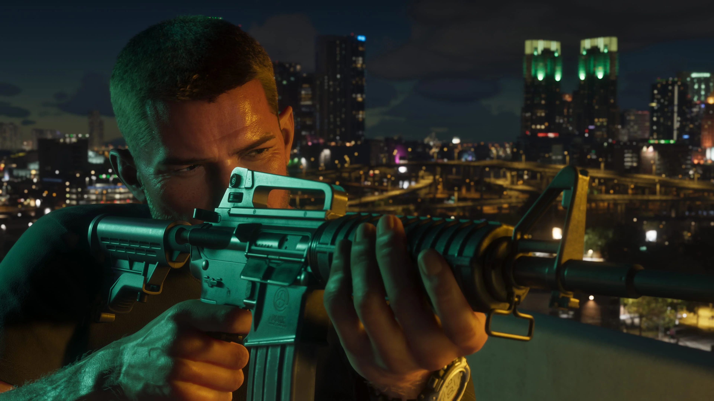

PROTAGONISTA
Jason Duval
Jason cresceu cercado por golpistas e criminosos. Depois de uma adolescência problemática e de uma passagem pelo Exército, acabou nas Leonida Keys trabalhando para traficantes locais.
Ele gostaria de uma vida mais fácil, mas conhecer Lucia pode acabar sendo a melhor — ou a pior — coisa que já aconteceu com ele.
Conhecer Jason